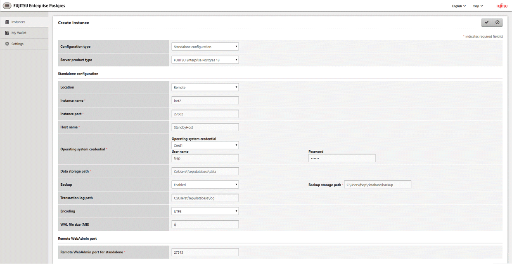

Once a credential is created in the Wallet, it can be used during remote instance creation or standby instance creation.
The following page uses the credential that was created in the previous section.

When "Cred1" is selected in [Operating system credential], the user name and password are automatically populated from the credential.